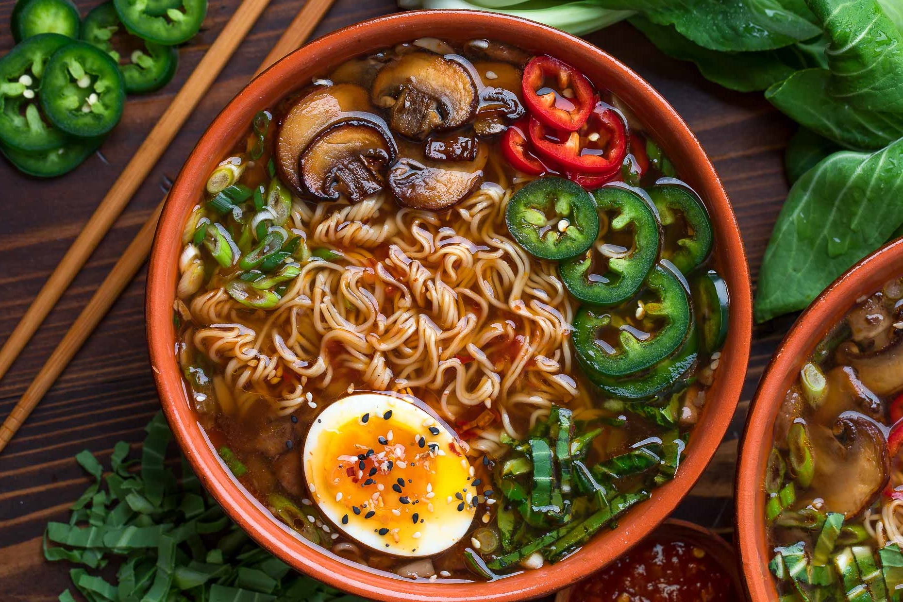

Hainan was my favourite place to go on vacation in these recent years! It is a complete change of environment from Canada's, with open beaches all around the island's shore. The tropics are plently unique and fun for 5 reasons as they have:

My favourite snack is a freshly prepared bowl of ramen and soup. Although it is not the healthiest meal with all of the sodium content, I definitely enjoy chowing down on an occassional bowl with spring onions or a bowl of fruit on the side.
Who could go on in life without a good group of like-minded people? A small portion of my friends have been by my side for years and years, and it is almost as if we shared a single brain cell. spend plenty of time with a closely-knit pack of friends, whether that be in person or on call, at school, at a restaurant, or at one of our homes.